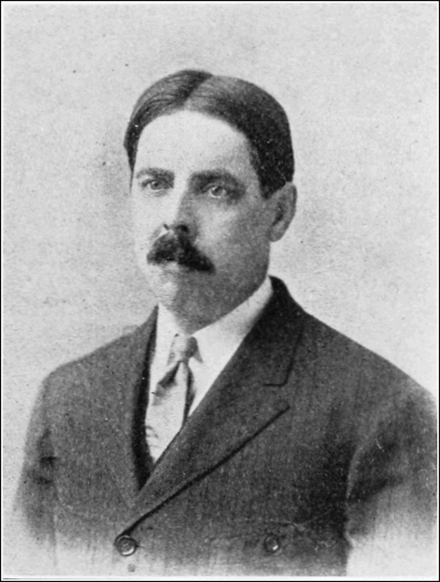
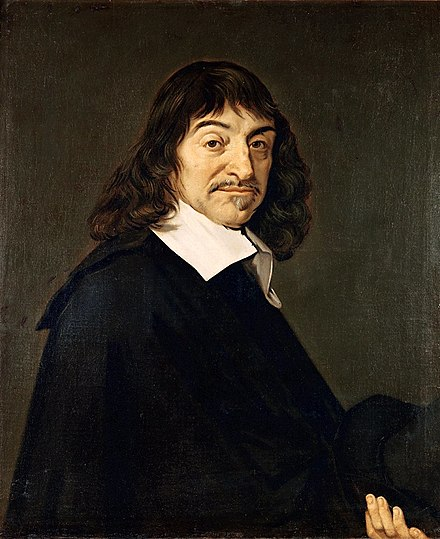
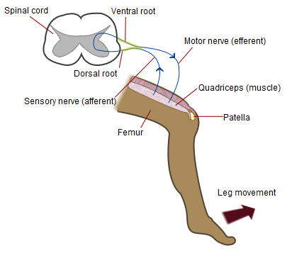
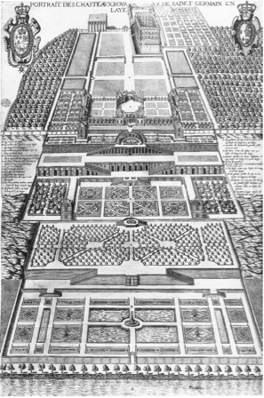
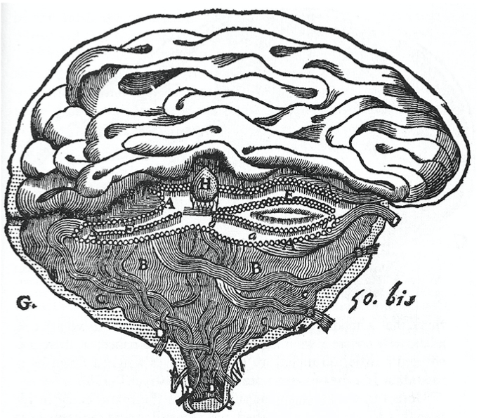
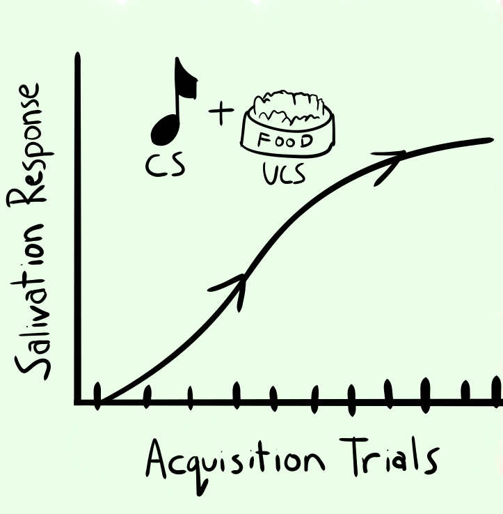
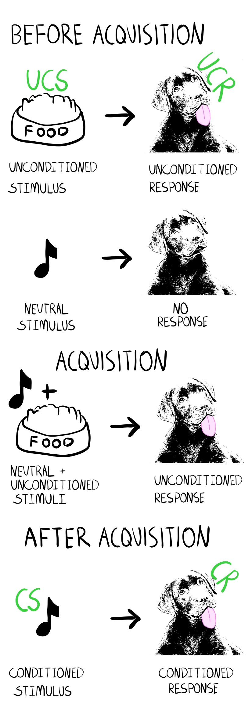
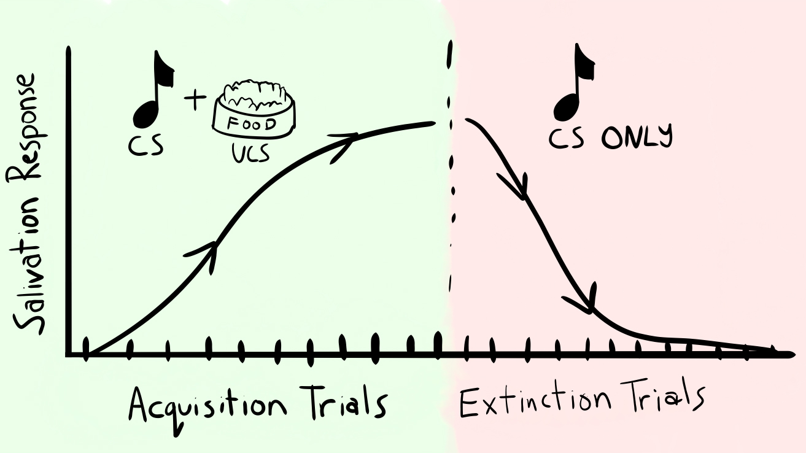

5 Associations
The previous chapter covered research on cognitive abilities spanning roughly from the 1860s to the 1960s from the perspective of individual differences psychology. For example, in addition to developing mental tests, Alfred Binet wrote more broadly about his school of “Individual Psychology” (Nicolas et al., 2014) that was aimed at using measurements of variation in human attributes to make society more efficient. However, the Individual Differences school of psychology was not the only approach to studying cognitive abilities. Instead, the methods of experimental psychology were also used to ask and answer questions about cognitive abilities. Experimental psychologists also developed tests, but they more often took the form of experimental manipulations. And, the results of the experiments were used to evaluate theories about how cognitive processes work. This chapter will focus on associationism and early empirical work on associative learning processes in humans and non-human animals.
5.1 Evolving ideas on cognition
There is a long history of ideas about cognition that predate and feed into psychological approaches to cognition, and covering all of them is beyond the scope of this chapter. However, if we zoom in on early experimental research between the 1890s to 1920s, we can refer to some of the intellectual history and see how it informed and guided cognition research at the time. Some of the really big claims and themes about cognition that appear in the introductions of early research manuscripts remain relevant today.
We are about to visit the laboratories of Edward Thorndike (1874-1949) and Ivan Pavlov (1849-1936). Thorndike was in America and Pavlov was in Russia, and both were independently conducting novel experiments to test theories and claims about cognition in animals. Before we review their experiments and findings, let’s first consider the background claims and ideas they intended to put to the test.
5.1.1 Humans and animals
So far we have discussed cognition in terms of human animals. But, there are so many other animals of all shapes and sizes, what about them? Prior to Thorndike and Pavlov, there wasn’t too much experimental research on cognition in the animal kingdom, but since then whole fields of animal and comparative cognition have been developed. Although this textbook will focus more on human cognition, I will attempt to integrate animal cognition as much as possible. And, rather than using “human-animal”, and “non-human animal”, I will refer to human and/or animal cognition throughout the book as a shorter way to identify the subjects of the research. Last, discussions about which words to use to refer to humans and animals point to background ideas motivating Thorndike and Pavlov’s work.
Just like there is a long human history of ideas about the mind, there is long history of ideas about animals, animal minds, and the human-animal relationship. Anthropocentrism is a variety of beliefs and traditions that center on humans as the most important species. For example, in early Judaic and Christian writings, a supreme supernatural being created humans in their image and set humans on a higher level than other animals. These ideas both distinguish humans from animals (as being different kinds of entities), and place humans in a hierarchy of quality above other animals. Judeo-Christian concepts predate psychology by thousands of years, and even though psychology as a natural science proceeded to construct different views on humans and animals, related hierarchical notions remain deeply ingrained. For example, “higher-order” cognition is often reserved for cognitive abilities argued to be special to humans, like inferential reasoning. And, “lower-order” cognition is often reserved for basic cognitive abilities that are common among animals. It’s not clear to me that these hierarchies are very useful.
Animism is another varied set of beliefs ascribing spiritual essences to things, including animals. Many fables, folklore, and religious texts have animal characters imbued with cognitive abilities and other powers. Relatedly, the idea that animals can be understood as if they were humans is also criticized as an inaccurate form of anthropomorphism.
Mystic ideas about humans and animals can be viewed as claims about cognition. One claim is about whether or not human cognition can be explained at all. The idea that people were created in the image of a fundamentally unexplainable supernatural being, suggests that the supernatural parts of people are inherently unexplainable. Another claim is about kinds of cognitive abilities. For example, the idea that animals possess vital spiritual essences like humans, could suggest that mental abilities of some animals are similar to people. Experimental Psychology arose out of the scientific tradition to put claims to the test by collecting evidence bearing on the claims.
5.1.2 Philosophy
The experiments of Thorndike and Pavlov are also set in a background of philosophy, especially debates in epistemology between rationalist and empiricist views of knowledge.
Rationalism involved views that some knowledge was innate and could exist separately from experience and information gained through sense organs. Furthermore, ultimate truths about reality were argued to depend on logic and reason. If the universe was a fundamentally logical place, then the process of accurate reasoning alone would be enough to deduce the ultimate truths.
Empiricism additionally emphasized a role for observation and evidence collection in knowledge creation. For example, human’s were argued to acquire knowledge over the course of their experience of the world through their sense organs. Empiricism invited further questions about how people created knowledge from their sensory experience, which clearly connected to questions of interest for early experimental psychologists.
The Associationist School included empiricist philosophers who speculated further on the nature of mental processes that produced knowledge from experience. In 1689, John Locke wrote, “An essay concerning human understanding”, and argued against the rationalist/nativist idea that people were born only with innate knowledge about the world. Instead, Locke advocated that people acquired knowledge by learning about the world through their experiences. In 1739, David Hume elaborated on the nature of the learning process and suggested a role for associations in, “Treatise on Human Nature”, that “when the mind, therefore, passes from the idea or impression of one object to the idea or belief of another, it is not determined by reason, but by certain principles, which associate together the ideas of these objects, and unite them in the imagination.”. Hume suggests broadly that acts of cognition involve a process of association that works according to “certain principles”. What the principles are, and how they work, is still a primary focus of the modern cognitive sciences.
Principles of association included roles for contiguity, similarity, frequency, and recency to shape the formation of new associations. The principle of contiguity states that strength of association depends on the proximity of events in space and time. Events that are closer to each other are associated more strongly. The principle of similarity states that more similar events will develop stronger associations than less similar events. The principle of frequency is that events that co-occur more frequently will be associated more strongly than less frequent events. The recency principle suggests stronger associations for recent events than more remote events. In general, these philosophical principles of association have held up quite well and are often components of modern theories.
5.1.3 Natural Science
There is also lesser known work from Robert Hooke (1635-1703), a natural scientist, that went much further than Hume’s “certain principles”. Robert Hooke, coined the word cell, and was the first person to observe a micro-organism under a microscope. In 1705, Hooke’s posthumous works were published, and they contained his model of how human memory could operate as a physical system (Hooke, 1705). The model was not entirely physical, because it allowed some role for “immaterial” forces; and, it was largely forgotten until fairly recently (Hintzman, 2003). However, despite not having a major historical impact, Hooke’s model was a clear attempt to move toward well-specified mechanistic explanations of cognition 1.
5.1.4 Evolution
A last backdrop to the upcoming works of Thorndike and Pavlov was Darwin’s theory of evolution. Darwin’s theory connected all life on earth and explained the origins of species in terms of natural selection processes. The critical ingredients for organisms to evolve over generations include 1) the ability to reproduce, 2) random mutations that produce heritable variations in the traits and behavior of the organism, and 3) environmental selection pressures. Organisms with advantages for survival in their particular environments would tend to pass on those traits to their offspring. Other organisms that were more likely to succumb to their environments, would be less likely to have offspring and pass on their heritable traits. In this way, organisms would slowly drift and change across generations based on whichever random mutations tended to facilitate those organisms reproducing and mutating over generations in their given environments.
Different from anthropocentric views, the theory of evolution clearly sets humans and animals in the very same explanatory ballpark. People are a species of animals with an evolutionary family tree, where every person is descended from their parents. Other animals have their own evolutionary family trees and lineages of descendants. Furthermore, if one went far enough back in the family tree, all animals could be descended from common ancestors.
Considering evolutionary theory, there is every good reason to consider cognition as a topic for humans and animals. First, humans are animals; so by definition human cognition is a specific case of animal cognition. Second, there are a wide variety of animals that range in their physical size and capabilities, and it seems implausible that an evolutionary process would only bestow cognitive processes onto humans and no other animals. Instead, evolutionary theory implies that cognitive processes among animals also evolved over time. This could imply that the field of cognition is as large and diverse as all the ways that cognitive processes might have evolved differently across species. At the same time, evolution is known to produce similar solutions across species (e.g., eyes), and it is plausible that animals share cognitive processes that work on the basis of similar principles.
So, the backdrop to Thorndike and Pavlov was western European cultural beliefs about humans and animals, western philosophical debates centering around psychological constructs like human knowledge, a desire to apply the rigors of natural science methodology to problems in psychology, a convincing theory of evolution suggesting that animals could be used as subjects to gain knowledge about evolutionary basic cognitive processes, and a wide open playing field where there was very little existing empirical work.
5.1.5 Associative Claims
If you took the position that cognition was a special ability that operated according to special rules that can never be known, it would not be possible to evaluate those claims with evidence. First, its not clear what ought to happen in any given situation if cognition is special and unexplained. Second, if any particular thing happened, it could be accounted for by saying that cognition is special like that.
Associationist claims are specific enough that they can be evaluated with evidence. As a result, it becomes possible to use the scientific method to assess claims about cognition. Let’s identify a few really basic claims that could be evaluated.
- People have associations between concepts
- New associations can be learned
- Some associations are stronger than others
First, could you think of examples from your experience that would provide evidence for these claims? Have you ever learned a new association between one thing and another? Are some ideas more strongly associated with others in your experience? I’ve learned many things that could involve associations. For example, I didn’t know how to type on a computer keyboard when I was born, I learned how to do it. Now, I barely think about what my fingers are doing when I type because the words I’m thinking are strongly associated with the finger movements I need to make to type the sentence I want to write. It’s easy to demonstrate for yourself that some associations are stronger than others. For example, think of a fruit that begins with the letter “A”. How long did that take? Think of any word that has a letter A in the 5th position of the word? Did that take longer? The letter A seems to be more strongly associated with some words than others.
Although, you could come up with additional examples from your experience that would be consistent with the claims, consider the problem of creating a laboratory-based demonstration. One goal of a laboratory-based demonstration is to describe a method and controlled set of circumstances that other people could use to reproduce your demonstration and verify your results. The following are early laboratory demonstrations that were used to evaluate the associationist claims.
5.2 Cattell’s Associative Reaction times
We met James McKeen Cattell in the last chapter, as he was an early proponent of mental ability testing before Binet. Cattell also used experimental psychology methods to ask gather evidence about associative processes in people.
5.2.1 Naming times
In one set of studies he measured how long it took people to see and name objects (CATTELL, 1886; Cattell, 1886). The ability to identify an object by naming it out loud was presumed to involve an association between perceiving the object and the action needed to utter the object’s name. One of Cattell’s findings was that people take twice as long to read words that “have no connexion”, compared to words that are in a sentence; and, twice as long to read letters that are not in order, compared to letters that are in words.
For example, Cattell’s subjects were twice as fast to read a regular versus scrambled sentence 2
Similarly, if the task was to read individual letters one a time, Cattell’s subjects were twice as fast to read letters when they occurred in words compared to when they did not. This general finding was later re-discovered, and termed the word-superiority effect in 1969 (Reicher, 1969).
Let’s relate Cattell’s general findings to the associative claims that people have associations between concepts, they can learn new associations, and that some associations are stronger than others. The first two claims are consistent with reading ability in general, which involves learning connections between an arbitrary symbol system (e.g., alphabetic letters) and vocal outputs. Cattell’s results are also consistent with the claim that some associations are stronger than others. For example, it appears that reading time does not just involve the time it takes to recognize and say a word or letter. If this was strictly the case, then people would take the same amount of time to read words and letter no matter if they occurred in sentences or words. Instead, people were faster to read words and letters when they appeared in familiar contexts, like sentences and words. This suggests that information from the surrounding context facilitates reading, possibly through some kind of association.
5.2.2 Association reaction times
In the following year, Cattell turned his reaction time methods more directly toward the problem of measuring associations, along with the amount of time taken by intervening cognitive processes involved in the associative process (Cattell, 1887). In the introduction to this paper he wrote:
“[In previous work..] 0.4 seconds was needed to see and name a word. When the physiological factors and the time taken up in seeing the word were eliminated, it was found that about 0.1 seconds was spent in finding the name belonging to the printed symbol. The time was longer for letters, which we do not read as often as words, and still longer (about .25 sec) for colours and pictures. I called the time passing, while the motor expression was being found, a ‘Will-time’.”
We will elaborate on reaction time methods in the next chapter. For now, it is worth pointing out two aspects of this measurement tool for understanding how cognitive processes might work. First, it is possible to measure reliable differences in reaction times when people complete particular tasks. For example, Cattell estimated that 400 milliseconds were needed to see and read a word, and that pictures took a little bit longer. Second, it is possible to speculate about the individual components of processing that account for the total reaction time. For example, Cattell divides up the reaction time for a word into physiological factors and time taken up be seeing the word, followed by the time taken to search and recall the name of the word, and finally the time taken to form the action to say the word.
In the remainder of the paper, Cattell gave subjects an association task that involved 1) receiving a cue/prompt, and 2) responding with a known association to the cue. For example, participants were shown a picture and asked to name in their first or second language. Cattell found faster picture naming in a first than second language, and argued that people had more practice naming objects in their first than second language. Another study simply measured the times associated remembering different kinds of facts given a cue. For example, the cue was a city, and subjects had to remember the country it was in. Or, the cue was a month, and subjects recalled what season it was in, or the preceding, or following month. Cattell reported average reaction times and showed consistent differences depending on the cue and associative response. Cattell speculated that different reaction times reflected corresponding differences in the mental operations needed to carry out each task.
5.3 Thorndike’s puzzle boxes

Edward Thorndike (1874-1949) was a student of Cattell who took some of the first experimental approaches to investigating associative processes in non-human animals 3.
Thorndike viewed previous claims about animal cognition as belonging to two wildly different camps, with almost no middle ground, or evidence to interrogate the claims. In one camp, animals might be near human, potentially being able to reason and form associations on par with people. In the other camp, animals might be simple reflex machines and nothing more.
Here are a few choice quotes from Thorndike’s doctoral thesis (Thorndike, 1898) that illustrate his thinking and approach to the study of animal intelligence.
“We do not know how delicate or how complex or how permanent are the possible associations of any given group of animals.”
“We say that the kitten associates the sound”kitty kitty” with the experience of nice milk to drink, which does very well for a common-sense answer. It also suffices as a rebuke to those who would have the kitten ratiocinate about the matter, but it fails to tell what real mental content is present. Does the kitten feel “sound of call, memory-image of milk in a saucer in the kitchen, thought of running into the house, a feeling, finally, of ‘I will run in’?” Does he perhaps feel only the sound of the bell and an impulse to run in, similar in quality to the impulses which make a tennis player run to and fro when playing? The word association may cover a multitude of essentially different processes, and when a writer attributes anything that an animal may do to association his statement has only the negative value of eliminating reasoning on the one hand and instinct on the other…To give to the word a positive value and several definite possibilities of meaning is one aim of this investigation.”
“Surely every one must agree that no man now has a right to advance theories about what is in animals’ minds or to deny previous theories unless he supports his thesis by systematic and extended experiments. My own theories… will doubtless be opposed by many. I sincerely hope they will, provided the denial is accompanied by actual experimental work. In fact I shall be tempted again and again in the course of this book to defend some theory, dubious enough to my own mind, in the hope of thereby inducing some one to oppose me and in opposing me to make the experiments I have myself had no opportunity to make yet.”
To summarize these quotes, Thorndike was interested in settling debate and ideas about animal intelligence using laboratory techniques and the scientific method. This would involve creating reproducible situations in lab where animal behavior could be manipulated and observed under different experimental conditions. Thorndike argued that his methods would be produce evidence about claims of animal intelligence, and that his methods could be used by other researchers both to verify his findings and to test his theories and claims even further. Thorndike’s method of assessing associations in animals involved puzzle boxes, or the modern equivalent of an escape rooms for animals.
5.3.1 Thornike’s basic methodology
Thorndike conducted multiple experiments on cats, dogs, and chicks. His experimental apparatus was in the form of a puzzle box, like the one depicted in Figure 2.

Thorndike made several variations on his puzzle boxes, but they all had the same basic features in common. First, animals could be placed inside the box. Second, animals could escape from the box if they figure out the trick. For example, pulling a latch, or a hoop on a string would unlock a door allowing the animal to escape. Animals were typically deprived of food and made hungry before they were placed in the box. And, they were given a food reward after they escaped from the box. Animals were given many practice attempts to get out of the box, and Thorndike measured the amount of time to get out of the box for each attempt.
5.3.2 Putative Mental Components of Association
Thorndike’s methods produced clear findings. His first main finding was that his animals could figure out the tricks, and they were able to escape from the box. His second main finding was that the animals got faster at escaping with practice. After making these demonstrations, Thorndike then considered possible explanations. How were the animals solving the problem? How were they getting faster? What kinds of associations were involved?
Thorndike’s aim was to gain clarity on the kinds of associations that might be involved, and he speculated on logical stages and types of associations that his animals might have been learned. For example, he wrote:
There might be in an association, such as is formed after experience with one of our boxes, the following elements:
- Sense-impression of the interior of the box, etc.
- Discomfort and desire to get out.
- Representation of oneself pulling the loop.
- Fiat comparable to the human “I’ll do it.”
- The impulse which actually does it.
- Sense-impression of oneself pulling the loop, seeing one’s paw in a certain place, feeling one’s body in a certain way, etc.
- Sense impression of going outside.
- Sense impression of eating, and the included pleasure. Also between 1 and 4 we may have
- Representations of one’s experience in going out,
- Of the taste of the food, etc.
This list details a number of experiences and impulses that presumably occur from the time when an animal enters the box, to the time after it has escaped and is eating the food reward. The general associationist explanation would be that each of these components are associated with one another, possibly in a chain, such that triggering one of the elements would cause a chain reaction, and successively trigger the next associated element, thereby allowing the animal to proceed through the puzzle box and get the food reward.
5.3.3 Experimental questions about associative processes
Thorndike also went on to conduct experiments with his puzzle boxes to test ideas about animal learning. These experiments involved manipulations intended to modify some aspect of the learning process.
5.3.3.1 Imitation Learning
Thorndike found that cats, dogs, and chicks did not benefit from watching other animals solve the puzzle box. This didn’t definitely rule out imitation as a possible source of knowledge, and it suggested to Thorndike that some elements of the associations needed to be experienced directly to be learned. Thorndike had plans to test whether an ape could learn to escape a box through imitation learning, but was unable to conduct the experiment because the monkey was not tame-able.
5.3.3.2 Mental Representation
As we will see throughout this textbook, theories of cognition often invoke the concept of mental representation. The previous chapter on mental imagery was an example of debates about the format of mental representations and whether they have analog-image like qualities (e.g., like sensory experiences), or are fundamentally very different, perhaps like abstract propositional knowledge. Thorndike was optimistic his methods could help settle questions of mental representation in animals. For example, do animals have internal images that are used in a network of associations? Thorndike proposed the following experiment:
“The only logical way to go at this question and settle it is, I think, to find some association the formation of which requires the presence of images, of ideas. You have to give an animal a chance to associate sense-impression A with sense-impression B and then to associate B with some act C so that the presence of B in the mind will lead to the performance of C. Presumably the representation of B, if present, will lead to C just as the sense-impression B did. Now, if the chance to associate B with A has been improved, you ought, when the animal is confronted with the sense-impression A, to get a revival of B and so the act C. Such a result would, if all chance to associate C with A had been eliminated, demonstrate the presence of representations and their associations.”
5.3.3.3 General concept formation
Another topic in cognition that we devote a whole chapter to is categorization and concept formation. Thorndike attempted experiments to determine the ability of his animals to form general concepts about the puzzle boxes. Consider a kitten who has learned to escape from a puzzle box by pulling a loop on a string. Is the learning very specific or very general? It’s possible that learning could be very, very specific (and we will see many examples in this textbook where learning very often is very specific). For example, the kitten may only escape from the specific puzzle box it had been trained on, and it would fail to easily learn other similar boxes, even those that contained loops in other locations about the box. Alternately, maybe the kitten learned general concept, something like, “to escape the box, go around and find the loopy thing, and then tug it”. In this case, if the kitten learned a general concept, it might easily escape from similar boxes that involved pulling loops, even the loops were in novel locations in the box.
Thorndike tested these ideas in transfer experiments. Here, animals first learned to escape from a particular box, and then learned to escape from new boxes. The empirical question was whether learning to escape from the first box would help animals learn to escape from the next box. For example, if a kitten learned to pull a loop on the left side of the box to get out, would they quickly learn to escape out of a box with the loop on the right side? Thorndike found evidence of positive transfer, which means that the training experience conveyed a benefit on the transfer test. His animals learned to escape from a new puzzle box faster when it was similar to a puzzle box they had learned previously. Although the evidence of positive transfer could be consistent with a claim that his animals were learning a general concept about the puzzle box, Thorndike favored the view that animals were not learning general concepts, and instead were learning about specific details of the puzzle box that happened to transfer well to similar boxes. In other words, he attempted to example the phenomena of transfer without appealing to a complex explanation, like imbuing kittens with human-like general reasoning abilities.
5.3.4 Further associative questions
Thorndike created a laboratory method that produced reproducible patterns of evidence related to questions about animal cognition. There weren’t many other researchers at that time applying methods of experimental psychology to animals, and Thorndike hoped his methods would be adopted by others for the purpose of challenging and extending his own work. In addition, Thorndike entertained questions about associations that ought to be studied in the future. Some of these questions included:
- Delicacy and permanence of associations: How fragile are some associations, how long do associations last after they have been formed?
- Complexity of associations (Thorndike intended to rank intelligence of animals as a function of the complexity of associations they could acquire)
- Number of associations: How many associations do different animals have?
- Inhibition of instinct by habit: Can an animal learn to override an instinctual behavior through associative learning?
- Role of attention: does the formation of an association depend on attending to sense-impressions?
5.4 Pavlov’s Classical Conditioning
Around the same time as Thorndike was conducting experiments to better understand associative processes in animals, Ivan Pavlov was conducting his own experiments on associative learning in animals using his own novel methods. Pavlov was in Russia and was not aware of Thorndike’s work until much later. Pavlov’s experiments were translated to English as a series of lecture in 1927 (Pavlov, 1927).
Thorndike approached his questions about animal learning from the perspective of Experimental Psychology, whereas Pavlov was skeptical of psychology as a natural science, and approached questions about animal learning from the perspective of a physiologist (or, a modern neuroscientist). Whereas Thorndike considered “psychic” phenomena such as mental images in his explanations of animal learning; Pavlov was more interested in measuring observable phenomena such as behavior, as well as physical substances, such as secretions, apparently produced by brain processes. Here are a few quotes from Pavlov:
“The cerebral hemispheres stand out as the crowning achievement in the nervouse development of the animal kingdom. These structures in the higher animals are of considerable dimensions and exceedingly complex, being made up in man of millions upon millions of cells–centres or foci of nercous activity– varying in size, shape, and arrangement, and connected with each other by countless branchings from their individual processes. Such complexity of strucgture naturally suggests a like complexity of function, which in fact is obvious in the higher animal and in man. Consider the dog, which has been for so many countless ages the servant of man. Think how he may be trained to perform various duties, watching hunting, etc. We know that this complex behaviour of the animal, undoubtedly involving the highest nervous activity, is mainly associated with the cerebral hemispheres. If we remove the hemispheres in the dog (Goltz, 1892), the animal becomes not only incapable of performing these duties but also incapable even of looking after itself.”
“In astounding contrast with the unbounded activity of the cerebral hemispheres stands the meagre content of present-day physiological knowledge concerning them. Up to the year 1870, in fact, there was no physiology of the hemispheres; they seemed to be out of reach of the physiologist”.
Pavlov wrestled with whether or not psychology should be involved with attempts to explain brain functions. He thought that the psychological perspective was less-exact and prone to non-physical interpretations, where the brain was implicated in some kind of “special psychical activity”. And, he suggested that, “there is no need for the physiologist to have recourse to psychology”, and that “investigations of the physiological activities of the hemispheres should lay a solid foundation for a future true science of psychology.”.
5.4.1 Descartes’ reflex

Before describing his experiments, Pavlov connected his work to philosophical ideas about humans and animals popularized much earlier by René Descartes (1596-1650). Descartes was a rationalist philosopher who advanced a dualist perspective of the mind. According to Descartes, humans had a physical body that operated like a physical machine that obeyed the laws and principles of physical machines. But, humans also had a soul that did not operate according to physical laws. The human soul was the mysterious quality that set humans apart from animals which were viewed as less than human. Animals had physical bodies, but no soul. Although Descartes advocated for dualism, his ideas about how human and animal bodies behaved like complicated machines were inspirational to physiologists (Fearing, 1929), who would become proponents of explaining cognition solely in terms of physical processes.

One of Descartes core ideas was the concept of a reflex, which involves a clear-cut line of cause and effect between an impending stimulus or impulse, and a subsequent effect. A common example is the knee-jerk reflex shown in Figure 4, where tapping a knee in the right spot can cause a leg to automatically kick up a little bit.

In describing humans and animals as physical machines, Descartes was inspired by the gardens at Saint-Germain-en-Laye (Vaccari & Philosophy Documentation Center, 2012) shown in Figure 5. The gardens were a marvel of hydraulic engineering. They contained an extensive network of pipes connected to fountains, and even controlled statues that had moving parts.

Descartes made an analogy between the pipes in the garden and the physiology of the body and brain. For example, in Figure 6, Descartes drew the brain as a complicated system of hydraulic pipes that were connected in a network of cause and effect reflexes. In the garden, water pushed through a pipe could cause a statue to move on the other end. In the body and brain, liquids pushed through the nervous system would cause movements too, in the form of behaviors and reflexes.
5.4.2 Pavlov’s liquid
Pavlov considered the possibility that the brain could be an extremely complicated system of reflexes, with many input pathways connected to output pathways. Of Descartes idea he wrote,
“Our starting point has been Descartes’ idea of the nervous reflex. This is a genuine scientific conception, since it implies necessity. It may be summed up as follows: An external or internal stimulus falls on some one or other nervous receptor and gives reise to a nervous impulse; this nervous impulse is transmitted along nerve fibres to the central nervous system, and here, on account of existing nervous connections, it gives rise to a fresh impulse which passes along outgoing nerve fibres to the active organ, where it excites a special activity of the cellular structures. Thus, a stimulus appears to be connected of necessity with a definite response, as cause with effect. It seems obvious that the whole activity of the organism should conform to definite laws.”
Pavlov was interested in discovering the so-called laws of stimulus-response pathways in the brain that ultimately govern human and animal behavior. Whereas his contemporary Thorndike had used measurements of behavior (like how long it took to escape from a puzzle box) Pavlov took a more direct physiological measurement approach. He observed that organs near the brain were involved in secreting various liquids. For example, when a dog smells food, it may begin to salivate. The stimulus sensation of smelling food caused a cascade of events, like water moving through a complicated system of pipes, culminating in a salivation response. In his laboratory, Pavlov was studying saliva responses in dogs when he discovered these stimulus-response pathways were not as simple as hard-wired reflexes. Instead, Pavlov discovered what is now commonly termed “classical conditioning”, a form of association learning linking together new stimulus-response pathways. For brevity, we will review a small subset of classical conditioning phenomena: simple acquisition, extinction, and spontaneous recovery. However, it is worth noting that Pavlov’s results inspired a much larger discipline centered on associative learning phenomena that is beyond the scope of this book.
5.4.3 Simple acquisition and conditioning terminology

In Pavlov’s simple acquisition procedure (shown in Figure 7), a dog was housed in a controlled laboratory setting and given numerous “acquisition trials”. On each trial, the dog was presented with a perceptual stimulus, like a loud tone, followed by a reward, like meat powder. The meat powder was a stimulus that normally caused the dog to salivate. Pavlov discovered that over the course of acquisition trials, the dog would begin to salivate in response to the loud tone, which was consistently paired with the food reward.
Simple acquisition is an example of a classical conditioning phenomena that results from systematic pairing of particular kinds of stimuli and their responses. Before we discuss a few other examples of conditioning phenomena, we will first define terms commonly used to describe stimuli and responses in these procedures. These terms include the unconditioned stimulus (UCS) and the unconditioned response (UCR), and the conditioned stimulus (CS) and the conditioned response (CR).

The unconditioned stimulus (UCS) evokes a response without any prior learning. For example, food stimuli such as food pellets or meat powder can be effective unconditioned stimuli because when animals salivate upon smelling the food. Importantly, an animal like a dog does not rely on any learning during the experiment to acquire this ability. Dog’s come into the experiment with the ability to salivate in response to smelling food.
The unconditioned response (UCR) is the “automatic” or default response to an unconditioned stimulus. For example, salivating in response to smelling food is an unconditioned response.
Another example of an unconditioned stimulus is a small puff of air to an eyelid. If you have ever had a small puff of air blown onto your eye, what was your immediate reaction? Blinking is a common immediate reaction, and is another example of an unconditioned response.
The conditioned stimulus (CS) begins as a neutral perceptual stimulus that does not evoke the unconditioned response. For example, a loud tone or a bright light could become a conditioned stimulus. Importantly, in our example, before any acquisition trials, a loud tone would be considered a neutral stimulus because it would not evoke a salivation response (the UCR) in an animal.
During the acquisition trials the neutral stimulus is paired with the unconditioned stimulus. For example, the tone (neutral stimulus) is paired is paired with food (UCS). Across the acquisition trials the neutral stimulus (the tone) becomes the conditioned stimulus (CS) if it successfully begins to trigger the unconditioned response (UCR).
The conditioned response (CR) is the newly learned response evoked by the conditioned stimulus. For example, after a dog has acquired the association between hearing a tone and getting a food reward, the dog will begin to salivate in response to the tone. In this case, the conditioned stimulus (the tone) now evokes a conditioned response (salivating).
5.4.3.1 Explaining simple acquisition
In a simple acquisition procedure the animal appears to learn a new association. However, even the most basic phenomena of simple acquisition is not so simple to explain. For example, what kind of association was learned? Perhaps the tone made the animal expect to receive food, and the expectation for food evoked salivation. This kind of explanation could suggest that the neutral stimulus evokes something like a vivid mental image of eating delicious food, and the mental act of simulating the experience of eating delicious food is enough to somehow cause the salivation response. Notice also that this explanation itself is complicated because it invokes a concept of mental simulation, which itself is not a well-understood process, as part of the explanation. As an alternative, it is possible the neutral stimulus becomes directly associated with the salivation response. In this case, the neutral stimulus does not cause any mental images of eating delicious food, but it somehow directly causes salivation. It’s also possible that both kinds of associations were learned.
5.4.4 Extinction
Can associations be unlearned? Pavlov addressed this question using an extinction procedure. Figure 9 shows an acquisition phase followed by an extinction phase. In the acquisition phase, the tone is paired with food and over trials the dog begins to salivate when it hears the tone.

In the extinction phase, the CS is presented alone without any reward. At the beginning of the extinction phase the dog shows the salivation response (UCR) when it hears the tone (CS). Throughout the extinction phase the dog will hear the tone many times, but the tone will not be paired with food reward. The phenomena of extinction occurs when the dog reduces or ceases to show a salivation response when it hears the tone. In other words, extinction is a reduction in the conditioned response (salivation) to the conditioned stimulus (tone).
5.4.4.1 Explaining extinction
The phenomena of extinction is very well-established. Animals who have acquired a new conditioned response to a conditioned stimulus will reliably show a reduction in the conditioned response following extinction training. Although the phenomena is well-established, the possible explanations of extinction are not as straightforward. For example, if an association was learned during acquisition, what happened to it during extinction? Was the original association unlearned or otherwise weakened? Perhaps the original association was untouched and the animal learned a new association during the extinction phase (e.g., that the tone does not predict food reward).
5.4.5 Spontaneous Recovery
Among several other conditioning phenomena beyond the scope of this chapter, Pavlov also discovered spontaneous recovery, which complicates the explanation of extinction learning.
Consider the idea that acquisition training causes an associative bond to form between a conditioned stimulus and response. The bond could be like a string connecting the stimulus to the response. On this view, the learning process establishes a string-like connection between the conditioned stimulus and response. When the stimulus appears it “pulls” out the connected response.
What happens to the string-like associative bond during the extinction phase? One possibility is that extinction causes the associative bond to deteriorate, weaken, and disconnect. In the metaphor, if extinction learning was completely successful in breaking the connection, then the previous association would be completely gone because the associative strands would be erased. As a result, after complete extinction learning the conditioned stimulus would never again evoke the conditioned response.
Pavlov’s discovery of spontaneous recovery was a clue that extinction learning was more complicated. Spontaneous recovery refers to the phenomena that an extinguished conditioned stimulus can sometimes show a spontaneous recovery and evoke the conditioned response at a later time. For example, a dog who had learned to salivate in response to a tone, and then received extinction training, would no longer salivate in response to the tone. Spontaneous recovery occurs when, sometime later, the dog appears to “randomly” or “spontaneously” begin salivating in response to the tone again.
According to the string metaphor of associative-bonds, spontaneous recovery should not be possible because the connection between conditioned stimulus and response should have been broken. Instead, the phenomena of spontaneous recovery invites alternative explanations. One possibility is that extinction does deteriorate an existing associative bond, but never perfectly. As a result, it is possible for the connection to spontaneously recover sometimes. Another possibility is that extinction is more about learning to suppress an already learned association. In this case, it is possible that the suppressive response deteriorates over time, allowing the original learned association to spontaneously recover. Another possibility is that learning is highly context-sensitive. As a result, extinction of a conditioned response may occur more strongly in the environment where the extinction training occurred, and the spontaneous recovery of the response may be more likely in other environments not associated with the extinction training.
5.5 Conclusions
This chapter introduced associationist ideas about cognition through early philosophy and early experimental psychology work on animals by Thorndike and Pavlov. The associationist philosophers were developing early process theories of how cognition works. A process theory includes a recipe of how individual parts interact together to produce some output. For associationists, the big claim about cognition was that it involved associative learning processes. These learning processes were assumed to create knowledge about the world by the process of experiencing events and objects in the world through sensory channels. Early experimental psychologists like Thorndike and Pavlov gave additional credence to the concept of associations as an acceptable unit of scientific study. Their laboratory methods, especially Pavlov’s, inspired whole branches and schools of psychology interested in measuring associative learning processes, some of which have continued to the modern day. Throughout this textbook we will occasionally return to the literature on associative learning, which has succeeded in identifying numerous empirical phenomena and creating detailed mathematical process models of the association formation process; all of which are relevant to cognition–especially, if, as the associationists claimed, cognition is fundamentally about learning associations.
In the next two chapters we will visit two more major perspectives that lead into the emergence of modern cognitive psychology in the 1960s and 70s. Chapter 6 covers the school of behaviorism, and Chapter 7 covers the introduction of information theory to psychology.
5.6 Appendix
5.6.1 References
Footnotes
Reuse
Citation
@incollection{j.c.crump2021,
author = {Matthew J. C. Crump},
editor = {Matthew J. C. Crump},
title = {Associations},
booktitle = {Instances of Cognition: Questions, Methods, Findings,
Explanations, Applications, and Implications},
date = {2021-09-01},
url = {https://crumplab.com/cognition/textbook},
langid = {en},
abstract = {This chapter covers associationism and early empirical
work on associative learning processes in humans and non-human
animals.}
}